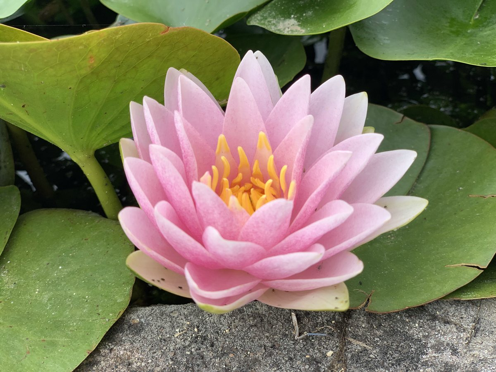

Week-long retreats at the chateau.
Seven days at Chateau de Séailles to bring your nervous system all the way home — movement, breath, stillness and sound journeys, in one of the quietest corners of Europe.
What this week is
An intimate nervous-system retreat: seven days to bring an over-revved system all the way down into deep rest, open it wide through movement, breath and sound, and return it home settled, with its full range restored. It is the work of the book, lived in the body — the swing between effort and rest, and the spiral that motion writes over a life.
A maximum of eleven guests, so the work can go deep and no one disappears.
The practice
Every session is a different doorway into the same place: the autonomic swing between effort and rest, and the slow deepening of awareness it makes possible.
- Nei gung — gentle internal cultivation to wake and gather the system each morning.
- Rhythm and Range — my own moving meditation, drawing together nei gung, somatic listening and vipassana on its feet. It builds from the smallest internal sensing to full, vibrant activation and back into stillness: the swing between receiving and expressing, being moved and moving.
- Vipassana and Tao meditation — the still pole of the swing.
- Breathwork — using breath to settle the nervous system and clear the charge.
- Reiki and massage — one-to-one, with a visiting massage therapist.
- Sound journey — ambient soundscapes held live each evening and beneath every Rhythm and Range journey by Don Shefer, in Dancing Monk Hall, the chateau's chapel.
- Life tools — for clearing, connecting and reframing.
And the land does half the work: six hectares of woodland and garden, a large pond to float on, the salt-water pool, vineyard walks and hammocks in the shade — parasympathetic practices in their own right, woven through the long middle of each day.
The shape of the week
Seven days, six nights, built as a single arc:
- Descent. Slowing all the way down — forest, water, gentle nei gung, the first sound baths.
- The deep middle. The full swing — the big Rhythm and Range journeys, deeper breathwork, longer sits, an optional stretch of silence.
- Integration. Making it portable, and a slow, protected return, so you leave settled rather than cracked open.
When
Four retreats in 2027, each running Sunday to Saturday, in the shoulder seasons when the Gers is warm but gentle:
- 16 – 22 May 2027
- 13 – 19 June 2027
- 12 – 18 September 2027
- 10 – 16 October 2027
Getting here
Fly into Toulouse (about ninety minutes away) or Tarbes-Lourdes (about an hour); Biarritz and Bordeaux are within easy reach, and the nearest TGV station is Agen. The Gers is gloriously rural, so the last stretch is by road — a group transfer from Toulouse can be arranged on the changeover days for an additional fee, or hire a car at your arrival point.
Accommodation & investment
Per person, for the seven days and six nights, with every meal, session and one-to-one bodywork slot included:
- Shared room — $3,200. A twin room, with one other guest of the same gender.
- Private room — $3,800. Sole use of your own room.
- Couples — $6,000 per couple. The two of you in a private room.
Early bird: 10% off when you book at least twelve weeks before your week. A deposit of $800 secures your place; the balance falls due sixty days before. Travel insurance covering cancellation is recommended; full terms on request.
What's included
- Six nights at Chateau de Séailles
- All meals — slow, regional, served outdoors under the trees whenever the weather allows
- The full programme: nei gung, Rhythm and Range, vipassana, breathwork, Tao meditation, reiki, sound journeys and life tools
- One-to-one reiki, and massage with a visiting therapist
- Full use of the grounds, pond, salt-water pool and Dancing Monk Hall
Not included: travel to the chateau, and airport transfers from Toulouse (available on request).
To register interest
Places are limited to eleven, and released to the email list first.